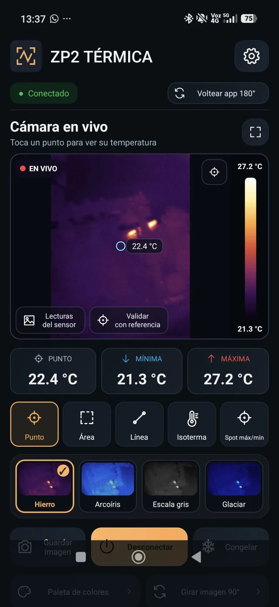
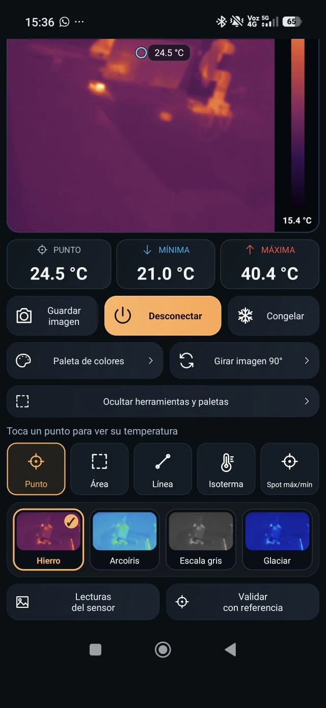

- Android
- Kotlin
- USB-C
- Termografía
App Android para la cámara térmica Ziboo ZP2
Desarrollé una app Android para volver a utilizar una cámara térmica Ziboo ZP2 por USB-C. La aplicación muestra la imagen del sensor, permite explorar sus lecturas y reúne paletas, herramientas de selección y exportación local.

Tecnologías
- Android
- Kotlin
- USB-C
- Termografía
Objetivo del proyecto
Recuperar el uso de la Ziboo ZP2 desde un teléfono Android, con una interfaz en español para visualizar la escena térmica, consultar puntos y regiones y guardar los datos de la sesión en el propio teléfono.
Problema que aborda
Quería utilizar la cámara, pero no encontraba una aplicación compatible disponible en Play Store ni en los repositorios habituales. El proyecto nace de esa dificultad: crear un cliente Android propio y documentar cómo recibe y presenta la información del dispositivo.
Arquitectura o funcionamiento
La cámara se conecta por USB-C a un teléfono con USB Host. La app negocia el formato de vídeo UVC y conserva los fotogramas originales mediante una adaptación de UVCAndroid. El modo solicitado de 256 × 384 contiene una imagen de 256 × 192 y un segundo plano de valores térmicos de 16 bits. El procesamiento en Kotlin separa ambos planos, aplica la escala de colores y calcula las lecturas de la selección.
Flujo de funcionamiento
Tras conectar la cámara y conceder los permisos, el usuario inicia el visor y puede tocar un punto, seleccionar un área o trazar una línea. La app presenta sus lecturas, mínima y máxima, permite resaltar un intervalo con la isoterma y ofrece paletas como Hierro, Arcoíris, Escala gris y Glaciar. También permite congelar la imagen, girarla, ampliar el visor y voltear toda la app para usar el conector arriba. Las capturas se guardan como PNG; la matriz se puede exportar a CSV y el fotograma original a un archivo binario.
Desarrollo e implementación
El cliente está escrito en Kotlin con interfaz nativa Android. La biblioteca UVC conserva los bytes originales del sensor para procesar la imagen y la matriz por separado. La versión 0.3.2 incorpora una escala de colores automática con adaptación gradual y la posibilidad de fijar un rango, de modo que una variación en los extremos de la escena no cambie bruscamente su apariencia. El repositorio incluye el código Android, las fuentes de la adaptación UVC, instrucciones de compilación, pruebas automatizadas y un APK ARM64.
Desafíos técnicos
La conversión de los valores térmicos se apoya en una inferencia del protocolo y su exactitud debe contrastarse con una referencia: el identificador USB por sí solo no certifica calibración. La app distingue matrices válidas de datos incompletos o corruptos y oculta las lecturas cuando no reconoce el plano térmico. La corrección disponible es un ajuste local de lectura, sin modificar la calibración de fábrica. La estabilidad de la escala de colores se trata por separado de los valores medidos.
Resultados
Se confirmó la visualización y la recepción de lecturas en el teléfono de prueba. Las dos capturas reales de esta ficha corresponden a una versión anterior a la 0.3.2. El repositorio distribuye esa actualización con pruebas automatizadas y mejoras del visor y la escala de colores; su comprobación física posterior y la exactitud térmica siguen pendientes de validación con una referencia.
Aplicaciones posibles
Exploración de escenas térmicas y desarrollo de herramientas de visualización e instrumentación local, conectando hardware USB con una app Android propia.
Hardware utilizado
- Cámara térmica Ziboo ZP2 USB-C, identificador USB 0BDA:5840
- Teléfono ARM64 con Android 10 o posterior y USB Host/OTG
- Xiaomi 15T con Android 16 como teléfono de prueba documentado
Software y tecnologías
- Kotlin e interfaz nativa Android
- UVCAndroid adaptada para conservar el fotograma RAW
- Procesamiento de imagen, matriz térmica y escalas de color
- Exportación local PNG, CSV y fotograma binario
- Android Studio, Gradle y pruebas JUnit/Robolectric
Imágenes del proyecto
